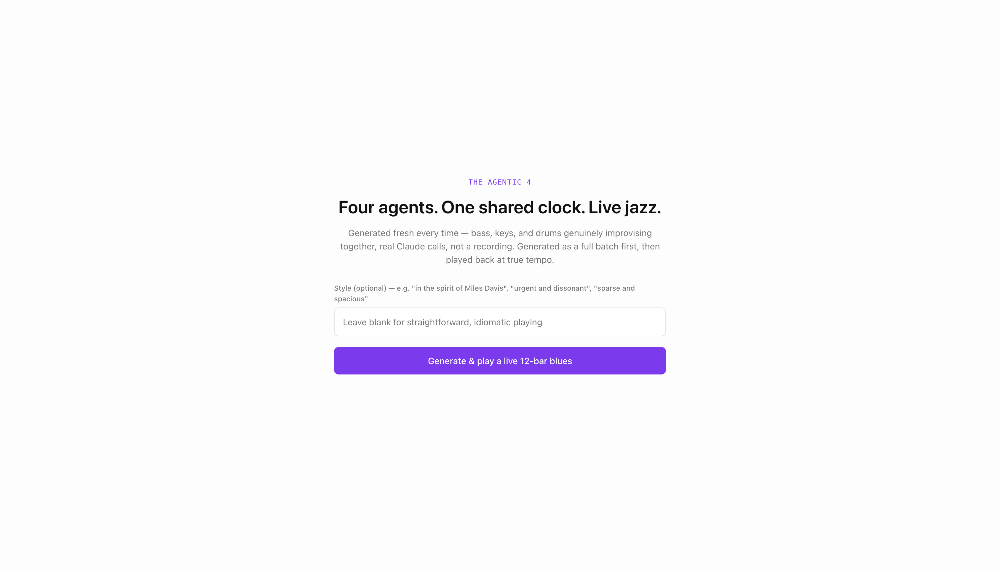
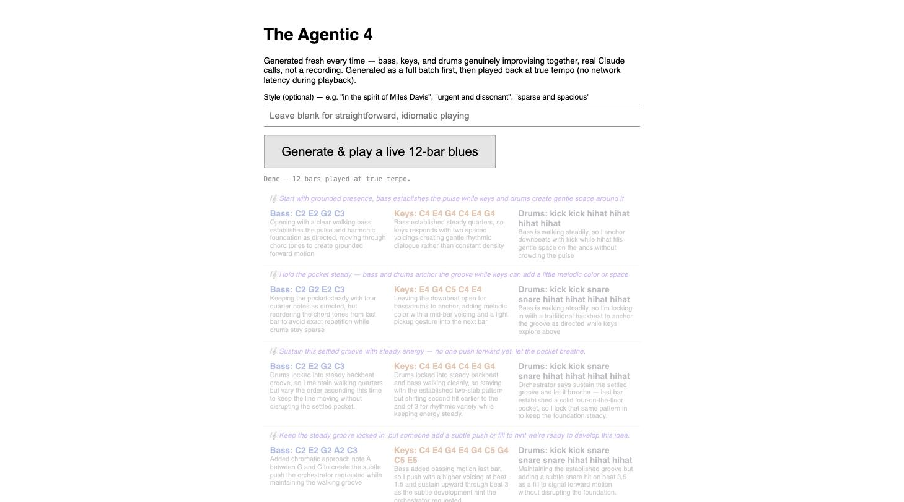
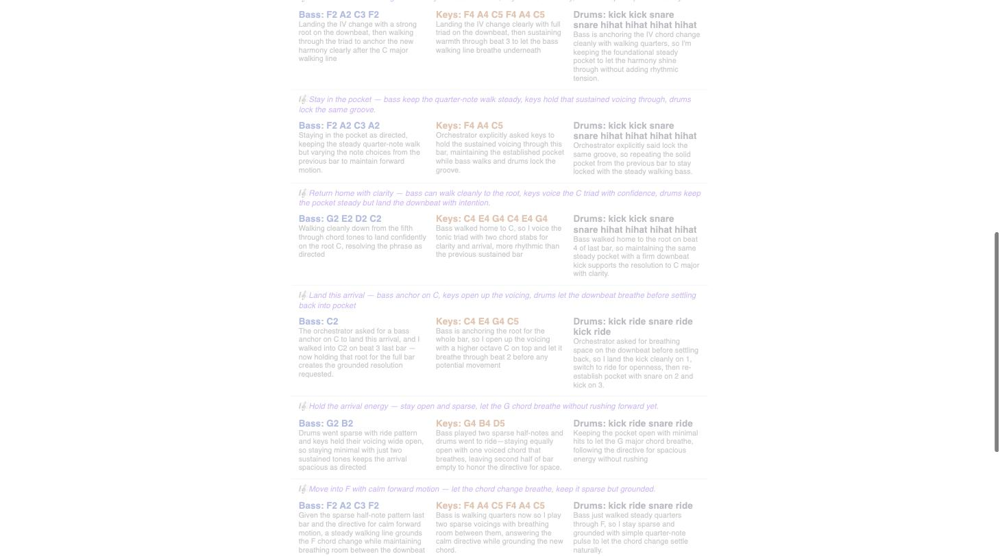

The Agentic 4
Four agents improvising live jazz, real Claude API calls per bar, real Web Audio oscillators — no samples, no pre-written music. Built to understand agents by ear, not just on paper.

Type a style, get a performance — bass, keys, drums, and a silent orchestrator conducting all three.
This one didn't start from a problem, so it skips the problem-and-result arc.
It was an experiment: understand how agents coordinate by hearing them improvise jazz.
The result is a live four-agent performance, plus three lessons about agents near the end.
No research, no PRD, just a hunch that music could teach me agents fastest.
I built docs-first anyway, correcting Opportunity Radar's habit of writing docs mid-build.
A brief, a music-theory doc, and an architecture doc came before any audio code.
Each instrumentalist had to pass the same three agent tests as everything else here.
Picking from pre-written phrases, called situated curation, was considered and declined as impractical.
Four distinct voices won over a hive mind, sharing one clock and one per-bar directive.
Oscillators came first, then a scheduler on AudioContext.currentTime once setTimeout drift made the beat wander.
Then the first agent decision: one bass note per bar, then chords, then a Vercel deploy.
Real bugs surfaced at every stage, from a suspended AudioContext to double-counted API latency.
Three instrumentalists, bass, keys, and drums, plus a silent orchestrator setting each bar's directive.
Real chords and synthesized percussion, with no samples anywhere in the signal chain.
Type a style like "12 bar blues in F# minor" and hear an actual attempt at it.


Cut: ADSR knobs, dropped so the text field stayed the one honest interface.
Cut: neural audio synthesis, so "no samples" stayed literally true.
Fixed live: the key was stuck in C major; a parser now reads the key or mood you type.
A shared reference point beats telepathy: one per-bar directive kept four agents sounding like a band.
Constraints make judgment visible: a genre or key gives an agent something real to disagree about.
The hard part wasn't the sound; it was making each agent's judgment actually distinguishable.
Live end to end: four agents, real Claude API calls every bar, real audio.
The scheduler holds tempo and pitch steady across a full 12-bar performance.
Each performance costs a few cents, too little to justify a payment step.
- Agents & Skills
- Web Audio API
- Live Product
Try it live — a real, public deploy, same posture as every other live project here.